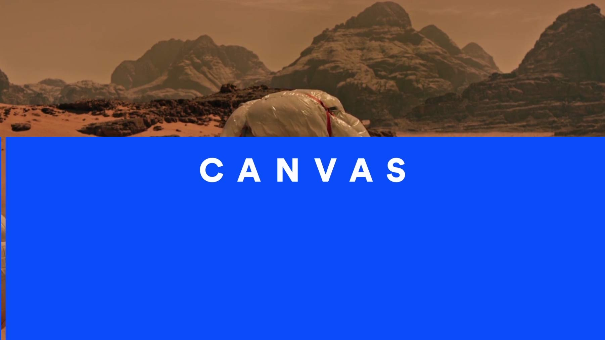
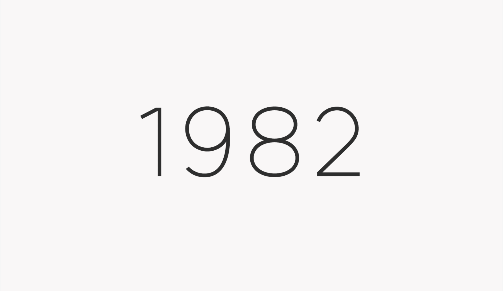

Skills & Focus
- Art Direction
- Motion Design
- Interactive Design
- User Experience
- Branding
- Typography
Client Experience
- Adobe
- Coca-Cola
- Dyson
- Mercedes-Benz
- Proximus
- Sony
Awards & Recognitions
- FWA x 1
- Awwwards mention x 2
- Behance featured x 2
- CSS Awards
- Computer Arts featured
- French Design Award

Identity bumper concept for Canvas.

Strima, a geometric sans typeface. Get it on Creative Market.